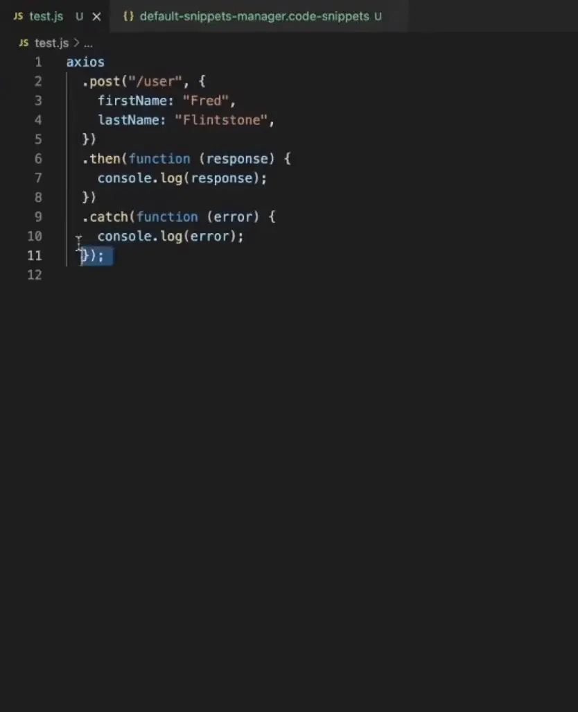
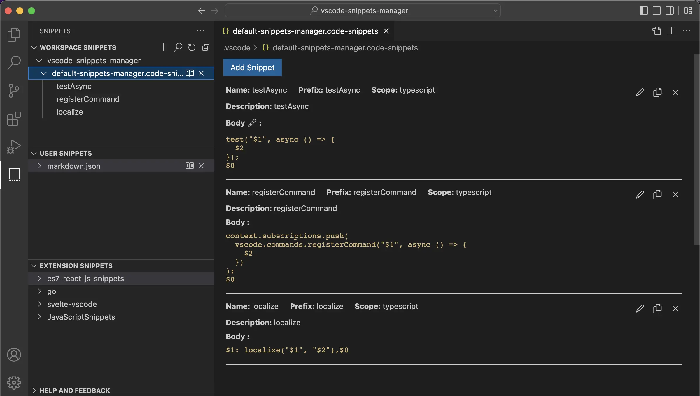
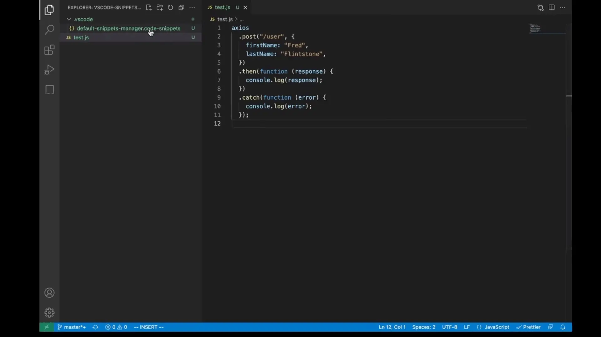
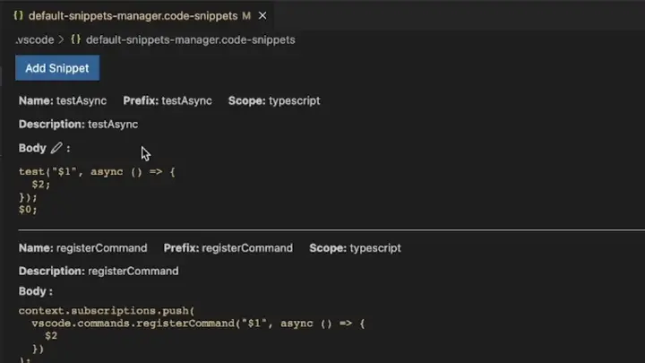

Code > Preferences > Configure User Snippets 打开代码片段文件，通过编辑如下 JSON 文件创建、修改和删除，工作区输入代码片段的前缀查询并使用。
{
"post": {
"prefix": "post",
"description": "post",
"scope": "javascript",
"body": [
"axios",
" .post(\"/user\", {",
" firstName: \"Fred\",",
" lastName: \"Flintstone\",",
" })",
" .then(function (response) {",
" console.log(response);",
" })",
" .catch(function (error) {",
" console.log(error);",
" });",
""
]
}
}
选中一段代码创建代码片段
点击按钮删除代码片段
在表单或编辑器中修改代码片段，工作区输入代码片段的前缀查询并使用。
在表单或编辑器中修改代码片段，工作区输入代码片段的前缀查询并使用。
制表位、占位符和选项
for (${1|let,var|} i = 0; i < ${2:array}.length; i++) {
const item = $2[i];
}
$0
变量
TM_SELECTED_TEXT: ${TM_SELECTED_TEXT}
TM_CURRENT_LINE: ${TM_CURRENT_LINE}
TM_CURRENT_WORD: ${TM_CURRENT_WORD}
TM_LINE_INDEX: ${TM_LINE_INDEX}
TM_LINE_NUMBER: ${TM_LINE_NUMBER}
TM_FILENAME: ${TM_FILENAME}
TM_FILENAME_BASE: ${TM_FILENAME_BASE}
TM_DIRECTORY: ${TM_DIRECTORY}
TM_FILEPATH: ${TM_FILEPATH}
RELATIVE_FILEPATH: ${RELATIVE_FILEPATH}
CLIPBOARD: \${CLIPBOARD}
WORKSPACE_NAME: ${WORKSPACE_NAME}
WORKSPACE_FOLDER: ${WORKSPACE_FOLDER}
CURSOR_INDEX: ${CURSOR_INDEX}
CURSOR_NUMBER: ${CURSOR_NUMBER}
CURRENT_YEAR: ${CURRENT_YEAR}
CURRENT_YEAR_SHORT: ${CURRENT_YEAR_SHORT}
CURRENT_MONTH: ${CURRENT_MONTH}
CURRENT_MONTH_NAME: ${CURRENT_MONTH_NAME}
CURRENT_MONTH_NAME_SHORT: ${CURRENT_MONTH_NAME_SHORT}
CURRENT_DATE: ${CURRENT_DATE}
CURRENT_DAY_NAME: ${CURRENT_DAY_NAME}
CURRENT_DAY_NAME_SHORT: ${CURRENT_DAY_NAME_SHORT}
CURRENT_HOUR: ${CURRENT_HOUR}
CURRENT_MINUTE: ${CURRENT_MINUTE}
CURRENT_SECOND: ${CURRENT_SECOND}
CURRENT_SECONDS_UNIX: ${CURRENT_SECONDS_UNIX}
RANDOM: ${RANDOM}
RANDOM_HEX: ${RANDOM_HEX}
UUID: ${UUID}
BLOCK_COMMENT_START: ${BLOCK_COMMENT_START}
BLOCK_COMMENT_END: ${BLOCK_COMMENT_END}
LINE_COMMENT: ${LINE_COMMENT}
打印剪贴板
console.log('${CLIPBOARD}: ', ${CLIPBOARD});
剪贴板 require 转 import
${CLIPBOARD/.*? +(.*?) += +require\((.*?)\)/import $1 from $2/g}
const path = require('path');
如何方便地打印 getInfo
async function getInfo(arg) {
await new Promise((res) => setTimeout(res, 500));
return `getInfo ${arg}`;
}
async function main() {
return getInfo(`test`);
}
main();
创建代码片段
/* TODO: revert */ (() => {
const TM_SELECTED_TEXT_DATA = ${TM_SELECTED_TEXT};
if (TM_SELECTED_TEXT_DATA.then) {
TM_SELECTED_TEXT_DATA.then((data) => {
console.log(`${TM_SELECTED_TEXT/`/\`/g}:Promise:${TM_FILENAME}:${TM_LINE_NUMBER}: `, data);
});
return TM_SELECTED_TEXT_DATA;
}
console.log(`${TM_SELECTED_TEXT/`/\`/g}:${TM_FILENAME}:${TM_LINE_NUMBER}: `, TM_SELECTED_TEXT_DATA);
return TM_SELECTED_TEXT_DATA;
})(); /* TM_SELECTED_TEXT: getInfo(`test`) */
绑定快捷键
{
"key": "cmd+l cmd+g",
"command": "editor.action.insertSnippet",
"when": "editorTextFocus",
"args": {
"name": "clg-selected"
}
},
JS Object 的特性 & JSON.stringify 缩进丢失
let json = `{
"1": {
"prefix": "1"
},
"0": {
"prefix": "0"
}
}`;
const snippets = JSON.parse(json);
json = JSON.stringify(snippets);
console.log(json);
// {"0":{"prefix":"0"},"1":{"prefix":"1"}}
带注释的 JSON
{
// 文档相关
"doc": {
"prefix": "doc",
"description": "doc",
"scope": "markdown",
"body": [
"### 1、产品文档",
"",
"### 2、相关人员",
"",
"### 3、代码仓库、线上地址",
"",
"### 4、部署方式",
"",
"### 5、注意事项",
"",
"### 6、TODO"
]
}
}
使用 jsonc-parser
const visitor = {
onObjectBegin() {
// 创建 map 并入栈
},
onObjectProperty() {
// 保存属性名
},
onObjectEnd() {
// 出栈
},
onArrayBegin() {
// 创建 array 并入栈
},
onArrayEnd() {
// 出栈
},
onLiteralValue() {
// 根据属性名为栈顶元素设置属性
},
};
visit(this.textDocument.getText(), visitor);
修改指定的 JSON 元素 vs/base/common/jsonEdit.ts
let json = `{
"1": {
// 这里的缩进不一样
"prefix": "1"
},
"0": {
"prefix": "0"
}
}`;
const [edit] = setProperty(json, ["0", "body"], "test body", {});
json = applyEdit(json, edit);
console.log(json);
/*
{
"1": {
// 这里的缩进不一样
"prefix": "1"
},
"0": {
"prefix": "0",
"body": "test body"
}
}
*/